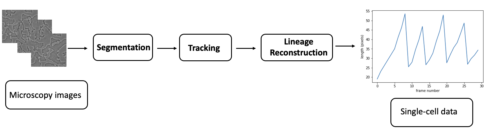

Introduction
Bacteria cheater and cooperators
Chronic inflammation is defined as a persistent systemic immune reaction. Whereas conventional inflammation is induced by injury to the tissue or by infection, the exact mechanisms of chronic inflammation are unknown. It has been hypothesised that over time, this state can cause harm to our cells via oxidative stress and dysfunctional mitochondria [3]. Research has linked it to complex diseases including type 2 diabetes, cardiovascular disease, asthma, and neurodegenerative disorders [1].
On a genetic level, markers of complex disease are often associated with more than one condition. This is known as pleiotropy. For example, Ellinghaus et al. identified 184 loci with shared risk for at least two of the following chronic inflammatory diseases: Crohn's disease, ulcerative colitis, ankylosing spondylitis, psoriasis, primary sclerosing cholangitis [4]. Cross-phenotype analyses can find common variants among traits of interest, but this is not always explained by true pleiotropy; there could be factors that confound the relationship such as misclassifying the phenotype [4]. Figure 1 explains the different types of pleiotropy and their causes.
Genome-wide association analysis
Genome-wide association studies (GWAS) are conducted for the identification of genomic variants associated with a particular trait of interest. They use a sample of the population and compare alleles of case and control groups for binary traits, or across the entire cohort for quantitative traits. In the last ten years, over 1500 of these studies have linked thousands of loci to hundreds of traits [7]. This widespread availability of data has allowed secondary studies on GWASGenome-wide association study summary statistics to uncover additional associated variants by increasing power through meta-analyses.
Project aims
This work examined shared phenotypic relationships on a molecular level, many of which have not previously been researched in the context of chronic inflammation or with these methods. The traits in question are inflammatory markers including fibrinogen, low-density lipoprotein (LDL), triglycerides, interleukin-6 (IL-6), insulin and monocyte levels, as well as anti-inflammatory vitamin D. More information about each molecular trait is detailed in Table 1 (see Methods). The aim of this work is to contribute to our understanding of chronic inflammatory mechanisms by:
- investigating the relationship between various inflammatory traits at a genome-wide level
- identifying specific and true pleiotropic genetic loci associated with the traits
- suggesting a potential shared biological mechanism of disease